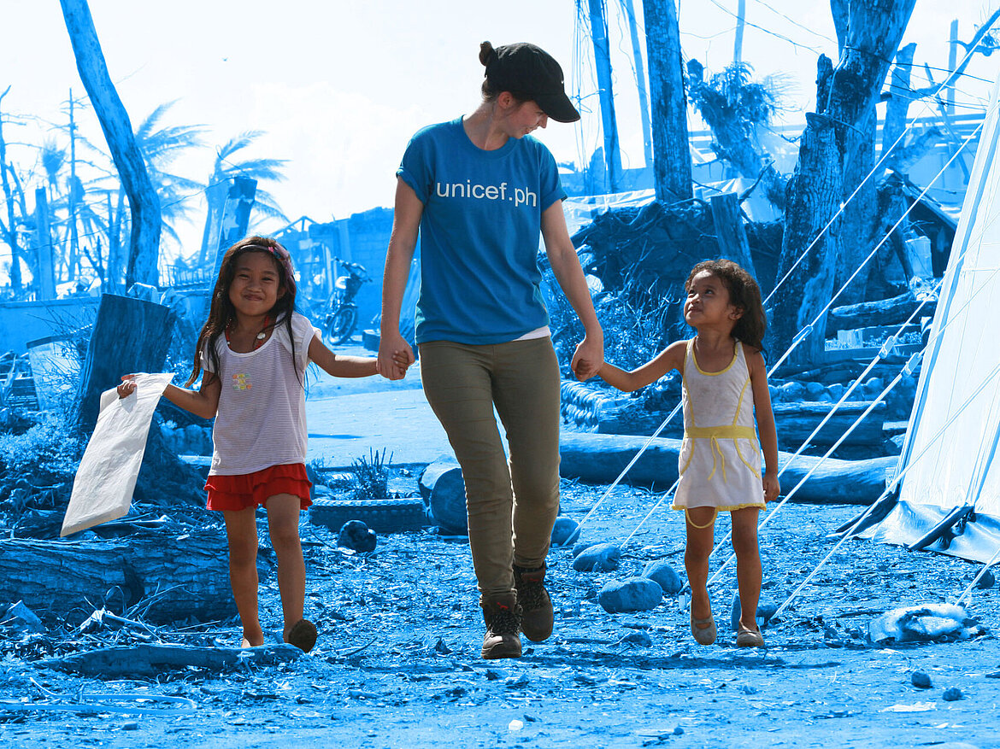
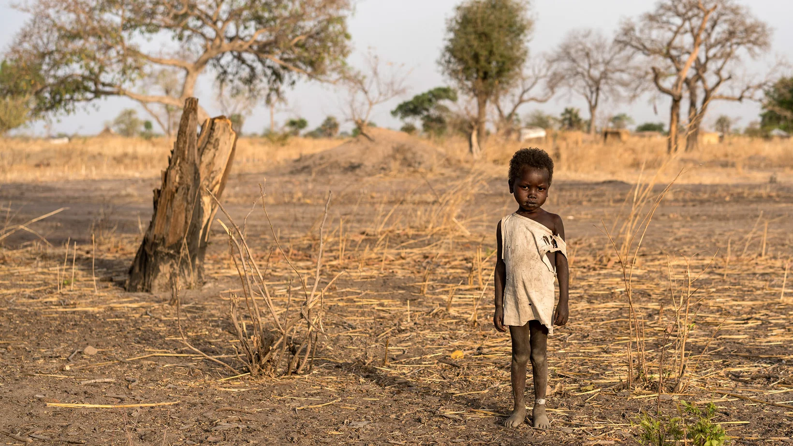
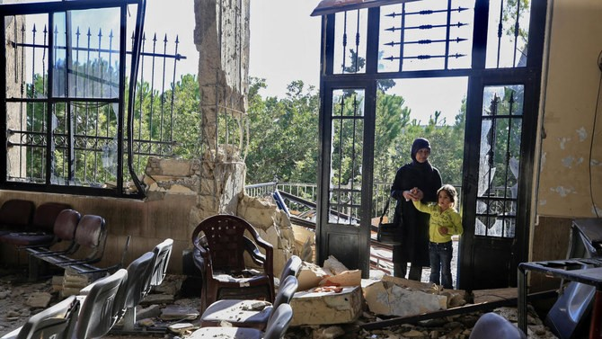
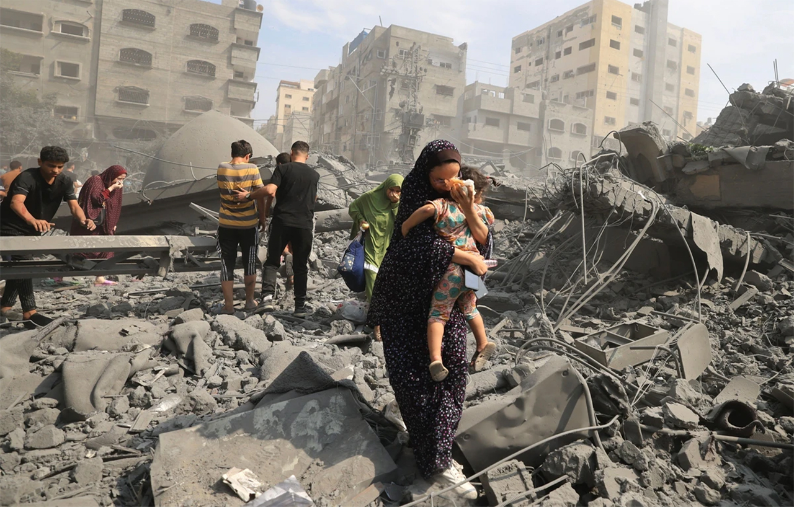

UNICEF, the United Nations agency for children, works to protect the rights of every child, especially the most disadvantaged and those hardest to reach. Across more than 190 countries and territories, we do whatever it takes to help children survive, thrive and fulfil their potential. We provide and advocate for education, health and nutrition services. Protect children from violence and abuse. Bring clean water and sanitation to those in need. And keep them safe from climate change and disease.
About Unicef

UNICEF works for every child, everywhere, to build a better world for everyone.
Stories and Updates

Helping children in South Sudan.
In conflict areas such as Khartoum and Darfur, we support life-saving facilities, such as hospitals, vaccinations, malnutrition screening, clean water and sanitation. We monitor violations of children's rights. In calmer areas, we provide basic services such as health care, water, education, and psychosocial care. We provide safe child-friendly spaces and help refugees in neighboring countries with clean water, healthcare, education, malnutrition and psychosocial support.

Crisis in Lebanon.
UNICEF was already present in Lebanon and was therefore able to provide rapid assistance in the event of escalations. We deliver medical supplies, provide vaccinations, and provide clean water and hygiene packages. In addition, we support children with psychosocial help, education, and relaxation. In affected areas, we are repairing water and sanitation facilities to restore access to clean water.

Genocide in Gaza
UNICEF remains in Gaza, providing assistance to children despite limited access and insecurity, such as malnutrition treatment, clean water and medicines. The number of children in need is extremely high, so more help is urgently needed. With the ceasefire, we can help on a larger scale. We are also providing aid in the West Bank, working with other organisations and local partners to increase and provide effective aid.
Education
34 million children educated
Health
45 million children vaccinated
Protection
12 million children protected from violence